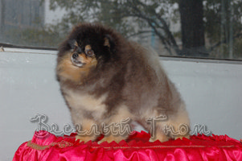
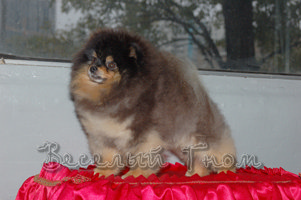

Веселый Гном Егорка
Ч.России, РКФ РУС ХАУС ВОРХУТ БИГ БЕН

Интерчемпион Aj's High Impact (США)

Ч.России,Клуба
ВЕСЁЛЫЙ ГНОМ ЮДЖИНА

Интерчемпион
Весёлый Гном Эминент Эль

Ч.Интер,Мира Kontrapunkt Vis Major (Польша)
Порода: малый шпиц;
Дата рождения: 28.07.06
Владелец: Терон Э.;
Титулы: Лучший щенок Евразии-2007, Юный Чемпион России, Чемпион России,Ч.Евразии-2008; Ю.Чемпион Клуба, Чемпион Клуба
|
Веселый Гном Егорка |
||
|
Ч.России, РКФ РУС ХАУС ВОРХУТ БИГ БЕН
|
Интерчемпион Aj's High Impact (США)  |
Ch. Aj's Smokin Joe (США) |
| Aj's Pic and Choose (США) | ||
| Ч.России Николь с Лосиного Острова | Alden's Zorro Boy (США) | |
| Ч.России Айскнехт Фликки | ||
|
Ч.России,Клуба ВЕСЁЛЫЙ ГНОМ ЮДЖИНА
|
Интерчемпион Весёлый Гном Эминент Эль
|
Ч.Интер,Мира Kontrapunkt Vis Major (Польша)
|
| Ч.России,НКП Весёлый Гном Хлоя | ||
| Ч.России Весёлый Гном Ия | Генрих | |
| Весёлый Гном Делия | ||